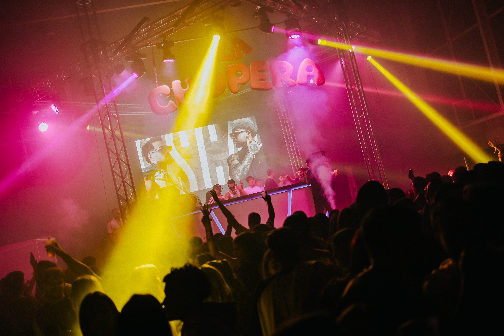
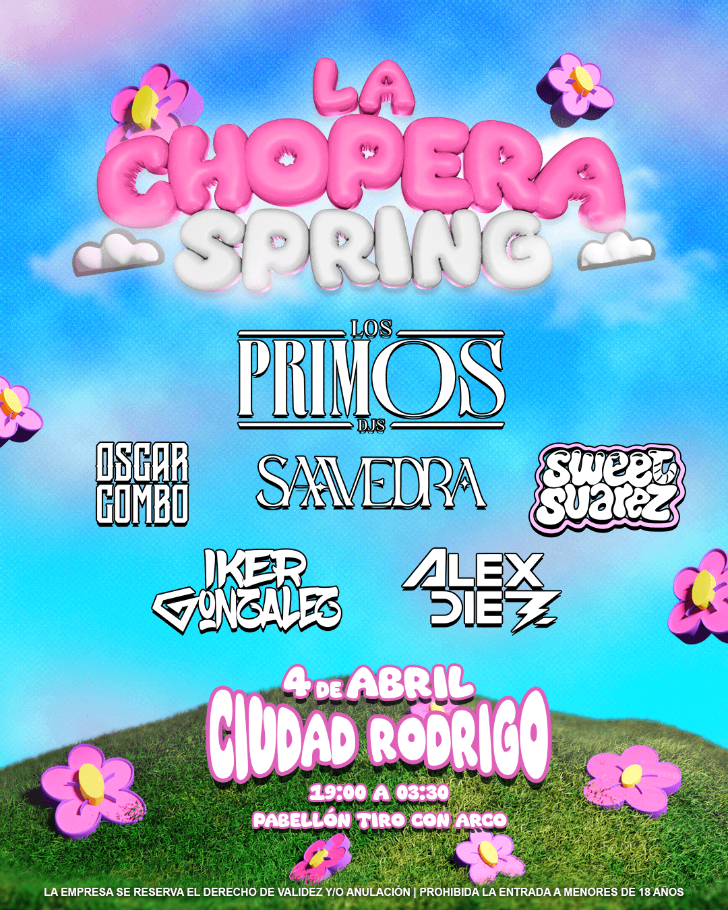
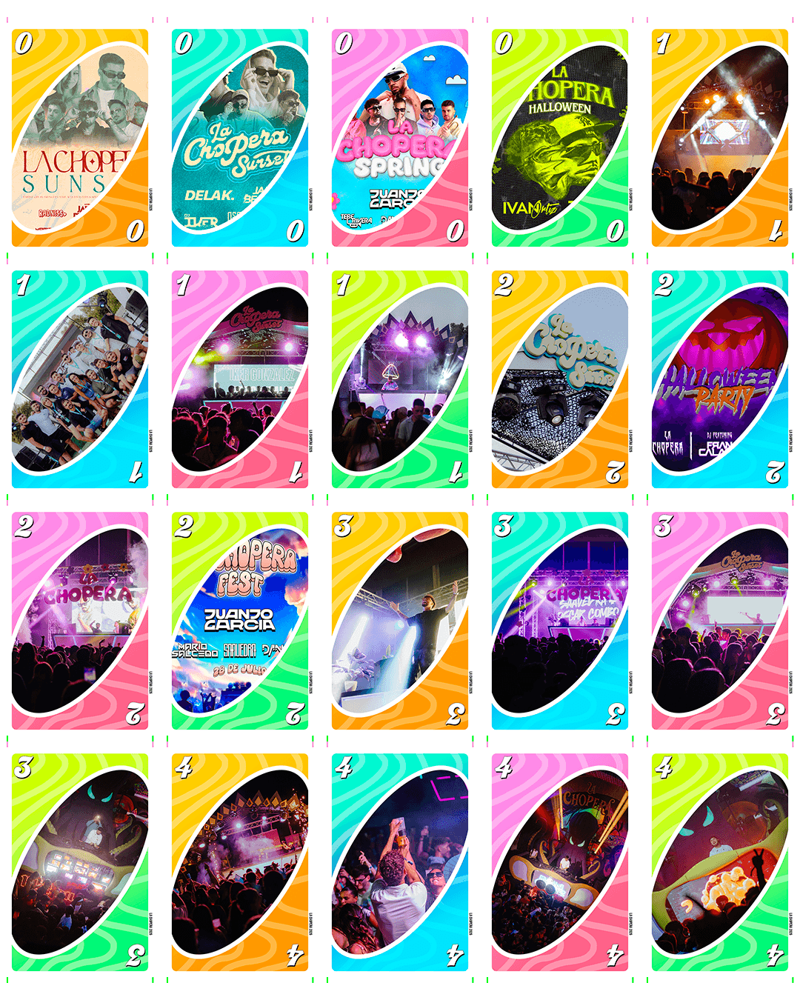
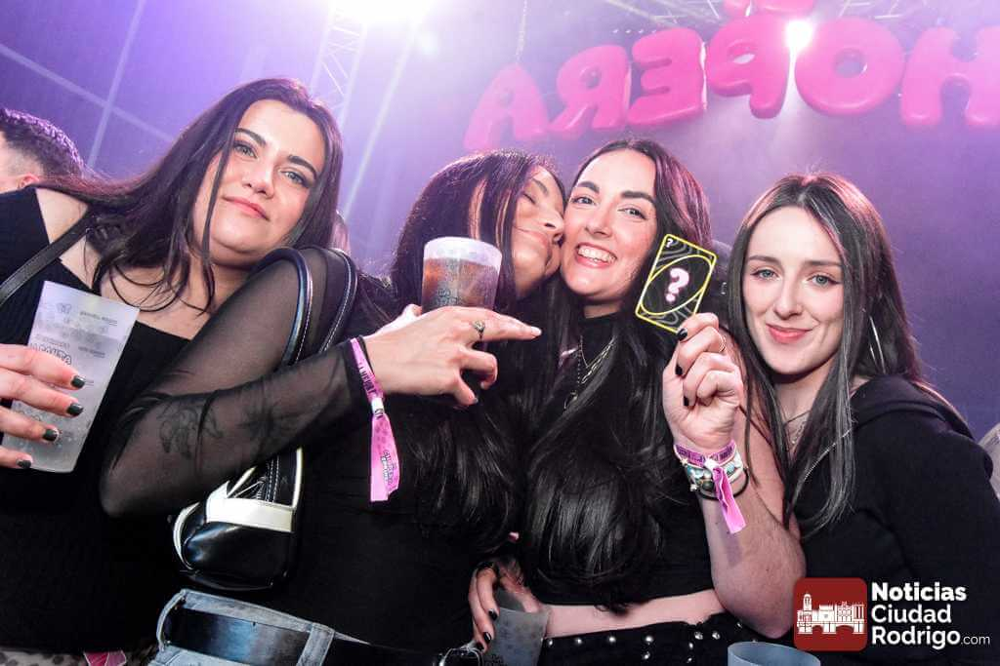
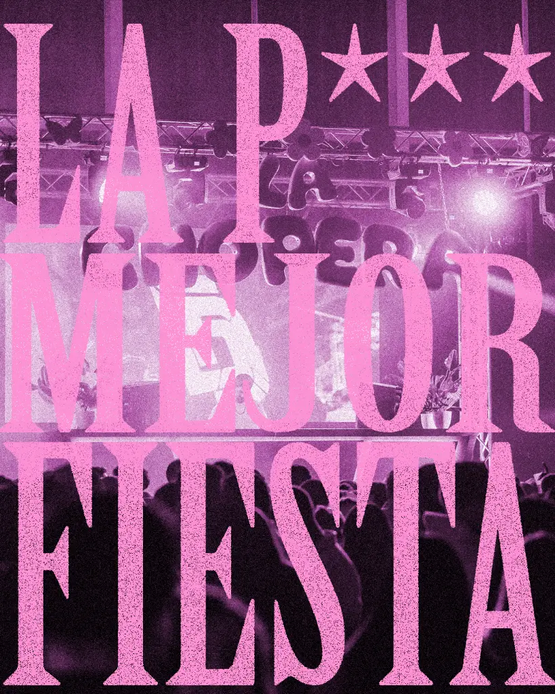

El Reto
Una vez mas fui el encargado para llevar adelante toda la campaña creativa de la edicion de primavera de este evento. Teniendo completamente libertad creativa para desarrollar desde la campaña de Marketing hasta los diseños de los vasos del evento, pasando por toda la carteleria, visuales, actividades sorpresa y todo lo necesario para llevar adelante un evento de esta magnitud.

Un Mundo de Primavera en 3D
Para la edición Spring, la estética debía alejarse del diseño de club tradicional y respirar aire fresco. Tomando inspiración en un universo casi infantil de cielos azules, césped verde y nubes, evolucioné el estilo minimalista de ediciones anteriores hacia un entorno puramente tridimensional. Utilizando Blender, no solo modelé tipografías voluminosas (apoyadas en la fuente Super Bubble), sino que construí todo el ecosistema de elementos visuales en 3D. El tratamiento de color en rosas y azules saturados se remató entre Illustrator y Photoshop, mientras que los visuales dinámicos para redes y pantallas cobraron vida gracias a After Effects.

Tangibilizando la Marca: El Juego Real
La identidad gráfica no podía quedarse en las pantallas; tenía que tocarse. Implementamos una mecánica de gamificación basada en el juego UNO, diseñando una baraja de cartas personalizadas en cuatro colores. Los asistentes debían interactuar entre ellos para reunir los cuatro colores y ganar recompensas, introduciendo además cartas raras de colección con bordes dorados e imágenes de ediciones pasadas.

El diseño de producto se extendió a cada detalle físico: desde los vasos reutilizables (que incluían medidores de líquido humorísticos y códigos de Spotify escaneables) hasta las pulseras, acreditaciones del staff y DJs siguiendo la temática de cartas. Una mención especial merecen los lanyards y llaveros del evento: diseñados con un exterior rosa de tipografía negra y un interior invertido, logramos un acabado tan estético que los asistentes los han incorporado a su uso diario, convirtiendo el merchandising en publicidad permanente.

Generar FOMO: Marketing de Guerrilla
La campaña de expectación demostró que la creatividad supera al presupuesto. Para anunciar la fecha, grabamos una pieza promocional en formato horizontal parodiando el estilo de la serie The Office, mostrando a un "jefe" desesperado exigiendo ideas a su equipo. Toda la producción, guionizada y grabada con recursos mínimos junto a Jorge, Silvia, Carlos, Mikel, Diego y Abel, conectó instantáneamente con la audiencia. Este hilo narrativo se mantuvo al adaptar la campaña al formato vertical para anunciar nuestra colaboración con la conocida food truck Origen Burgers. Toda la corrección de color y montaje final pasó por la línea de tiempo de Premiere Pro.
Haz clic para reproducir ☝️
Caos Controlado: La Noche del 4 de Abril
Semanas antes del evento, lanzamos un enlace secreto por stories para comprar un artículo misterioso ("?") limitado a muy pocas personas por solo 1€. Días después, estos compradores recibieron una carta física agradeciendo su confianza ciega en La Chopera. ¿El desenlace? Durante el evento, se anunció por micrófono que los poseedores de la carta tenían acceso exclusivo para subir al escenario principal detrás de los DJs.

A nivel de dirección artística en el local, el reto fue sincronizar estímulos constantes. Desde la irrupción inesperada de una charanga en pleno cartel electrónico, hasta la programación de una ruleta gigante en la pantalla principal. Un asistente elegido al azar accionaba la ruleta en directo y, al detenerse, desencadenaba una lluvia de chupitos gratis volando entre cañones de confeti.

El Veredicto Final
Aunque quedó la pequeña espina de no colgar el cartel de Sold Out, el impacto orgánico y la respuesta en Ciudad Rodrigo validaron por completo la dirección del proyecto. La Chopera Spring 2026 se alejó del concepto de "fiesta estándar" para convertirse en una experiencia inmersiva e impredecible que genera un FOMO real en quien no asiste. Como dicta nuestro propio eslogan en cada material gráfico y en boca de los asistentes: "LA MEJOR P*** FIESTA".
